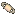
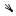
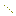
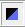
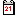

Je kunt de weergave van de Zon, planeten en satellieten aan of uit zetten via Kaart → Toon objecten → Toon planeten dialoog venster of het  icoon op de objectenbalk.
gevorderden ⇒ Via de Instellingen → Zonnestelsel → Planeet dialoog venster, kun je uit de weergave mogelijkheden kiezen voor afbeelding van de objecten binnen het Zonnestelsel. Verder kun je de lengtegraad voor Jupiter's grote rode vlek (GRV) instellen, kiezen of je de Aardschaduw (handig bij Maansverduisteringen) wilt tonen en je kunt de planeten in 'transparante lijn modus' zetten voor sterbedekkingen.
De standaard Cartes du Ciel-SkyChart installatie bevat een voorbeeld bestand met de gegevens van 207 kometen (het mijne is C:\Program Files\Ciel\data\sample\Cometsample.dat). Voor gebruik, laad dit eerst in de database via het Instellingen → Zonnestelsel → Komeet - Laad MPC bestand dialoog venster.
Daarna kun je de weergave van kometen aan of uit zetten via het Kaart → Toon objecten → Toon kometen dialoog venster of de  icoon in de objectenbalk.
Gevorderden ⇒ Via het Instellingen → Zonnestelsel → Komeet - Laad MPC bestand dialoog venster kun je door een klik op de knop Download een compleet en vers kometen-bestand downloaden van de Minor Planet Center (MPC) site. In hetzelfde dialoog venster maakt de tab “Data Onderhoud” het je mogelijk om de kometen-database bij te werken. De tab “Toevoegen” maakt het je mogelijk om nieuwe komeetkarakteristieken vast te leggen.
De standaard Cartes du Ciel-SkyChart installatie bevat een voorbeeldbestand met de gegevens van 5000 planetoïden (het mijne is C:\Program Files\Ciel\data\sample\MPCsample.dat). Voor dat je deze kunt gebruiken moet je deze laden in de database via het Instelingen → Zonnestelsel → Planetoïde - Laad MPC bestand dialoog venster. Daarna kun je de maandelijkse gegevens berekenen (zelfde dialoog venster, volgende tab).
Vanaf nu kun je de weergave van planetoïden aan/uit zetten via het Kaart → Toon objecten → Toon planetoïden dialoog venster of het  icoon op de objectenbalk.
Gevorderden ⇒ Via het Instelingen → Zonnestelsel →Planetoïde - Laad MPC bestand dialoog venster kun je van af de site van het Minor Planet Center (MPC) een compleet vers bestand downloaden met de baangegevens van alle bekende planetoïden. Via de tab “Data onderhoud” kun je de database op orde houden. Via “Toevoegen” kun je de karakteristieken van nieuwe planetoïden toevoegen.
Je kunt de baanbewegingen van objecten in het Zonnestelsel simuleren via het Instellingen → Datum / Tijd → Simulatie dialoog venster.
Je kunt de schemer simuleren via het Instellingen → Weergave → Hemelkleur dialoog venster (radio knop “Vast zwart” of “Automatisch”) of met het  icoon op de objectenbalk.
Gevorderden ⇒ In hetzelfde dialoog venster kun je de te gebruiken kleuren voor automatisch of vast instellen.
Via het Bestand → Kalender dialoog venster kun je de ephemeriden opvragen van de objecten in het Zonnestelsel. Je kunt hiervoor ook het  icoon op de hoofdbalk gebruiken. Dit geeft je informatie over de schemer, planeten, kometen, planetoïden, Maan- en Zonsverduisteringen.
Gevorderden ⇒ In hetzelfde dialoog venster kun je de nieuwe Maan- en Zonsverduisteringvoorspellingen door Fred Espenak downloaden vanaf NASA Eclipse Web Site.
Je kunt ook de kleur van kometen, planetoïden, en omloopbanen wijzigen via Instellingen → Weergave → Kleur. De kleur van de schemer en hemelachtergrond wijzig je via Instellingen → Weergave → Hemelkleur.
{kind=link}
{kind=link}
{kind=link}
{kind=link}
{kind=link}